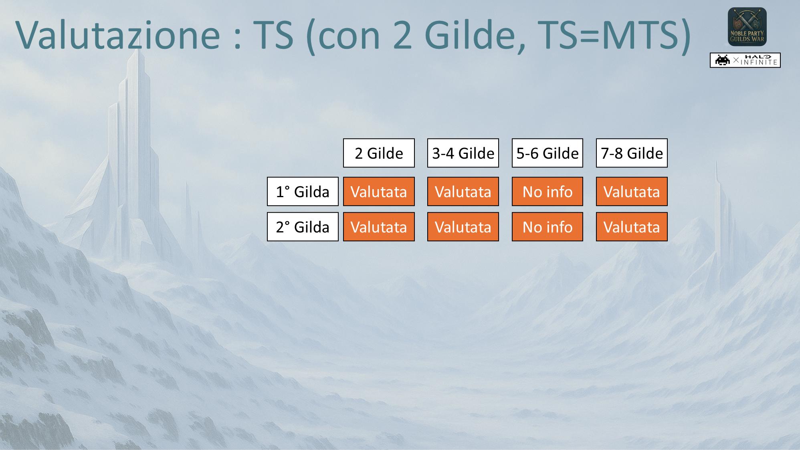
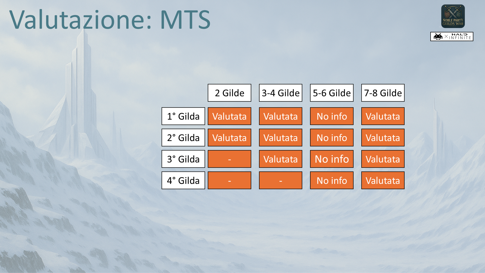
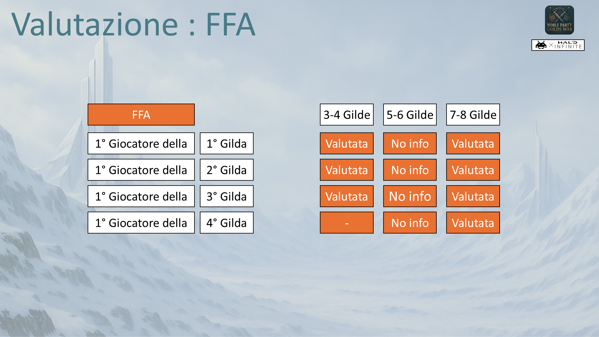
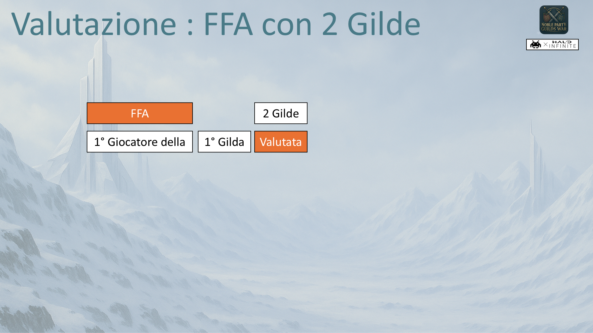
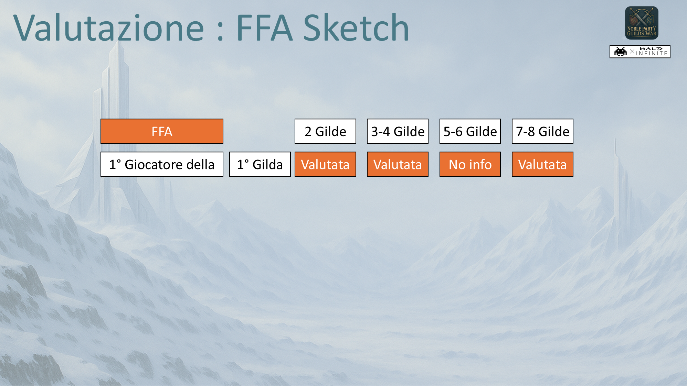

Awards
Qui troverete tutti i vincitori del Campionato Noble Party Guilds War. Non saranno pochi, ma nemmeno troppi. [Torna alla Home]
❮

Qui troverete tutti i vincitori del Campionato Noble Party Guilds War. Non saranno pochi, ma nemmeno troppi. [Torna alla Home]
Questi sono gli Awards (o Premi) che verranno consegnati a fine Campionato, quando la Campagna Ufficiale viene conclusa. Si basano sulla "Performance" che viene spiegata in seguito (ma a pari merito/performance, Premio identico per tutti). La performance viene calcolata basandoci sulla presenza di tutti i giocatori che hanno giocato, ma abbiamo applicato un ulteriore ACCESSO: per permettere di accede agli Awards.
Si premia il CAMPIONE dei Leaders e dei Mercenari.
Coloro che hanno vinto (come partecipanti) il numero maggiore di sole partite Special (Champion).
Si attribuiscono il premio Oro, Argento e Bronzo.
Per i Leaders si guarda al maggiore numero di vittorie fra i Leaders.
Per i Mercenari si guarda al maggiore numero di vittorie fra i Mercenari.
I Leaders Principali contano come Leadrs.
ACCESSO: vinci almeno una partita come partecipante con modalità Champions (Fornite inclusa).
| Leaders | Rnk | Mercenari |
|---|---|---|
| - | 1st | - |
| - | 2nd | - |
| - | 3rd | - |
Si premia il Leader e il Mercenario SANGUINARIO.
Coloro che hanno avuto la migliore performance sulle sole partite
Standard/Massacro (TS,MTS,FFA).
Si attribuiscono il premio Oro, Argento e Bronzo.
Per i Leaders si guarda la migliore performance fra i Leaders.
Per i Mercenari si guarda la migliore performance fra i Mercenari.
I Leaders Principali contano come Leadrs.
ACCESSO: gioca almeno 6 partite con modalità Standard.
| Leaders | Rnk | Mercenari |
|---|---|---|
| - | 1st | - |
| - | 2nd | - |
| - | 3rd | - |
Si premia il Leader e il Mercenario STRATEGICO.
Coloro che hanno avuto la migliore performance sulle sole partite Social (TS,MTS,FFA).
Si attribuiscono il premio Oro, Argento e Bronzo.
Per i Leaders si guarda la migliore performance fra i Leaders.
Per i Mercenari si guarda la migliore performance fra i Mercenari.
I Leaders Principali contano come Leadrs.
ACCESSO: gioca almeno 6 partite con modalità Social.
| Leaders | Rnk | Mercenari |
|---|---|---|
| - | 1st | - |
| - | 2nd | - |
| - | 3rd | - |
Si premia il Leader e il Mercenario SCATENATO.
Coloro che hanno avuto la migliore performance sulle sole partite Sketch (TS,MTS,FFA).
Si attribuiscono il premio Oro, Argento e Bronzo.
Per i Leaders si guarda la migliore performance fra i Leaders.
Per i Mercenari si guarda la migliore performance fra i Mercenari.
I Leaders Principali contano come Leadrs.
ACCESSO: gioca almeno 4 partite con modalità Sketch.
| Leaders | Rnk | Mercenari |
|---|---|---|
| - | 1st | - |
| - | 2nd | - |
| - | 3rd | - |
Si premia il Leader e il Mercenario ERRANTE.
Si attribuiscono il premio Oro, Argento e Bronzo.
Per i Leaders si guarda la migliore performance fra i Leaders su tutte le partite.
Per i Mercenari si guarda la migliore performance fra i Mercenari su tutte le partite.
I Leaders Principali contano come Leadrs.
ACCESSO: gioca almeno 6 partite con modalità Standard e Social,
e 4 partite con modalità Sketch. Inoltre Gioca 4 partite (non Guerre) con ogni Gilda.
| Leaders | Rnk | Mercenari |
|---|---|---|
| - | 1st | - |
| - | 2nd | - |
| - | 3rd | - |
Si premia il Leader e il Mercenario GUERRIERO.
Coloro che hanno avuto la migliore performance globale su tutte le partite.
Si attribuiscono il premio Oro, Argento e Bronzo.
Per i Leaders si guarda la migliore performance fra i Leaders.
Per i Mercenari si guarda la migliore performance fra i Mercenari.
I Leaders Principali contano come Leadrs.
ACCESSO: gioca almeno 6 partite con modalità Standard e Social,
e 4 partite con modalità Sketch.
ESCLUSIONE: si assegna prima Award Viaggiatore, poi Award Guerre,
escludendo per Guerre chi ha già una medaglia uguale o superiore in Viaggiatore.
| Leaders | Rnk | Mercenari |
|---|---|---|
| - | 1st | - |
| - | 2nd | - |
| - | 3rd | - |
Si premia la GILDA SOVRANA.
la Gilda che ha avuto la migliore performance globale su tutte le partite.
Vengono inoltre premiati i primi 3 Leaders e i primi 3 Mercenari che hanno
avuto la migliore performance quando
hanno giocato con questa Gilda, aiutandola ad ottenere il miglior risultato.
Si attribuiscono il premio Oro, Argento e Bronzo per le prime 3 Gilde.
Il Leader Principale della Gilda conta per aiutare la Gilda a vincere,
ma non conta nel calcolo dei primi 3 Leaders (viene automaticamente premiato).
ACCESSO: gioca 4 partite (non Guerre) con la Gilda.
| Gilda | Rnk | Leader Principale | 1st Contributors | 2nd Contributors | 3rd Contributors |
|---|---|---|---|---|---|
| - | 1st | - | - | - | - |
| - | 2nd | - | - | - | - |
| - | 3rd | - | - | - | - |
Ogni partita finisce con +1 per la Gilda o Armata vincente e +0 per quella perdente, questo è un punteggio di facciata. Al cuore di questo Campionato, non si premia la vittoria in termini tecnici (KDA, numero bandiere catturate ed altro), ma si premia quale vittoria viene raggiunta e come. Inoltre non ci limitiamo a premiare solo il primo classificato al fine di dare buoni propositi per ribaltare classifiche provvisorie. A tutte le Gilde in gioco viene applicato una serie di Fattori: la Valutazione. Tutti i fattori sono stati nascosti ai partecipanti, però mettiamo alla luce alcuni esempi per dare una idea.
| Fattore | Descrizione |
|---|---|
| Composizione Gilda | Ogni Gilda è valutata sul rapporto Leader/Mercenari per ogni Guerra. |
| Tipo Partita | Ogni Gilda è valutata sulla base di quali partite ha giocato. |
| Side Quest | Sono partite addizionali per accumulare punti. |
| Ogni Gilda/Giocatori per se | Sebbene ci sono Guerre con Armate, ogni Gilda gioca per se stessa per il punteggio finale. Stessa cosa per i Giocatori. |
| Classifica fine Partita | Generalmente, punteggi vengono attribuiti alle prime 4 Gilde. |
| Punteggio FFA | Classifica si basa sul 1° Classificato di ogni Gilda. |
| 📋 Note e Consigli |
|---|
| 👉 La possibilità di ricevere punti, la ha solo chi fa parte di una Gilda durante ogni Partita. |
| 👉 Sebbene le Gilde in Guerra devono avere fra di loro lo stesso numero di Leader e Mercenari, Caso particolare (valido) se il Leader Principale e la sua Gilda sono costretti ad avere un numero maggiore di Leaders rispetto alle altre Gilde per mancanza di Mercenari. |
Quando una Gilda (o Armata) finisce una partita ottiene La Valutazione. Abbiamo detto che La Valutazione = una serie di Fattori. La Valutazione viene applicata ugualmente a tutti i giocatori di quella Gilda (o Armata) e quindi diventa Punti per i giocatori. Questo ha piccole differenze per i casi Champions e Sayans dove qualcuno rimane "in panchina" a fare lo spettatore.
Questi sono ALCUNI esempi dove mostriamo a chi viene applicata una valutazione.





| 📋 Note e Consigli |
|---|
| 👉 Per le TS con Gilde o Armate, 1st Classificato è il vincente, e 2nd Classificato è il perdente. |
| 👉 Per le FFA, la classifica delle Gilde in gioco viene determinata dal miglior piazzamento di uno dei suoi giocatori. Guardiamo a quale Armata appartiene la 1st Gilda per esporre il punteggio e fine partita. |
| 👉 Ogni combinazione di categoria di partita (Standard,Social,Sketch,Champions) con tipo (MTS,TS,FFA) e opzione (Sayans, Arsenale Gilda) ha un fattore unico. |
| 👉 "Sayans MTS" con sole 2 Gilde in gioco, conta come "Sayans TS". |
A differenza della The Great LAN (2024), qui abbiamo lasciato piena libertà ai giocatori di: giocare con qualsiasi squadra/gilda, comporre la gilda con un numero più o meno elevato di giocatori, scegliere il numero di guerre da fare (side quests sono opzionali). Questo aumenta i gradi di libertà che influenzano il punteggio (Punti) cumulativo di ogni gilda e ogni giocatore. Abbiamo deciso di usare una formula che renda più equo possibile il fatto che alcuni giocatori giocheranno meno partite di altri, accumulando meno punti, che alcune gilde potrebbero essere sempre composte da meno giocatori di altre e così via. Abbiamo usato Bayesian Weighted Average per determinare la performance di ogni giocatore.
\( \mathrm{BWA}^{(c,p)}_{i} = \dfrac{k^{(c,p)} \cdot L^{(c,p)} + X^{(c,p)}_{i}}{k^{(c,p)} + Y^{(c,p)}_{i}} \)
che rappresenta la formula applicata ad ogni Giocatore rispetto a Classe e Partita. Dove il parametro Lega:
\( L^{(c,p)} = \dfrac{\sum_i X^{(c,p)}_{i}}{\sum_i Y^{(c,p)}_{i}} \)
rappresenta la media globale (tutti i giocatori considerati) e il parametro
\( k^{(c,p)} = \mathrm{mediana}(Y^{(c,p)}_{i}) \)
rappresenta un coefficiente di regolarizzazione, cioè quanto peso dare alla media globale, deciso come mediana.
Per quanto riguarda l'apice delle variabili:
\( (c;p) = (\mathrm{Classe}\,;\,\mathrm{Partita}) \)
ci sono 2 Classi: Leader e Mercenario, e 5 (tipi di) Partite: Overall-Tutte, Social, Sketch, Standard, Special. Per quanto riguarda il pedice delle variabili, indica il giocatore preso in considerazione:
\( i = \mathrm{Giocatore }\,i\)
Infine:
\( X = \mathrm{Punti}\,;\,Y = \mathrm{Osservazione}\)
che sono il punteggio (Punti) cumulativo del giocatore e il numero di volte che ha giocato (ovviamente valori che cambiano in base all'apice e pedice).
Questi BWA sono stati usati per determinare gli Awards. Abbiamo considerato per la formula BWA, e.g. per la mediana, tutti i giocatori con almeno 1 Osservazione quindi 1 partita.
Per l'Award delle Gilda, abbiamo fatto uno step di calcolo addizionale. Per ogni Gilda abbiamo considerato le Partite come Overall-Tutte giocate da ogni giocatore con la Gilda. E qui abbiamo preso gli BWA Leaders e Mercenari di ciascuna Gilda: con hanno rispettato l'ACCESSO per l'Award Gilda. Poi abbiamo preso la Media di tutti questi BWA considerandolo il BWA della Gilda.
| 📋 Note su BWA |
|---|
| 👉 Parametro k tira i giocatori con poche partite verso L; k evita picchi ingiusti di giocatori che giocano poco |
| 👉 Giocatore con poche partite e con X/Y media bassa, alzato verso L |
| 👉 Giocatore con molte partite e con X/Y media bassa, viene poco alterato e rimane basso |
| 👉 BWA premia chi ha poche partite ma con una alta media X/Y. |
| 👉 BWA non premia chi ha media X/Y bassa, ma smussa l’impatto dei pochi dati (poche partite). |
| 👉 Questo metodo considera il fatto che ad ogni guerra partecipano un numero di giocatori differenti. |
| 👉 Per l'Award della Gilda, la media normalizza il fatto che tutte le partite hanno un numero differente di giocatori in gioco. |

Ispeziona i Punteggi del Campionato Scores.

I Racconti di chi ha vissuto questo Campionato su Chronicles.

Prima di giocare ricordati di leggere il Regolamento.

Gilda Ade, Gilda Aquila, Gilda Bastione, Gilda Cobra, Gilda Pericolo, Gilda Sciabola, Gilda Valchiria, Gilda Valore.